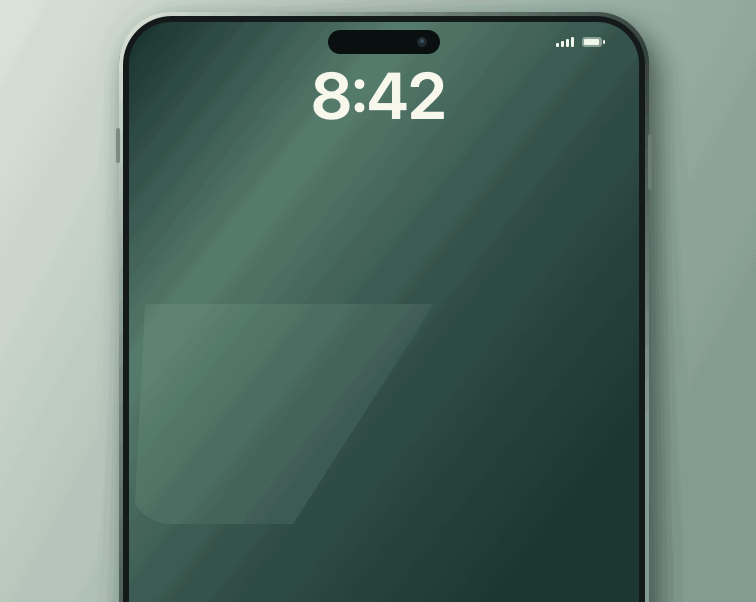
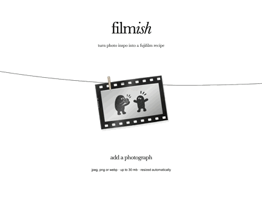

healf
connects oura and apple health data to send personalized recovery check-ins throughout the day.
node.js · openai · sqlite · docker · oauth
hi im celyna ♡
product-minded software engineer making the complicated feel intuitive.
currently @ jpmorgan, building financial tools for 27k+ clients. prev @ nasa jpl.

connects oura and apple health data to send personalized recovery check-ins throughout the day.
node.js · openai · sqlite · docker · oauth

upload a reference photo to find fujifilm recipes with similar colors and tones.
next.js · react · typescript · sharp · image processing